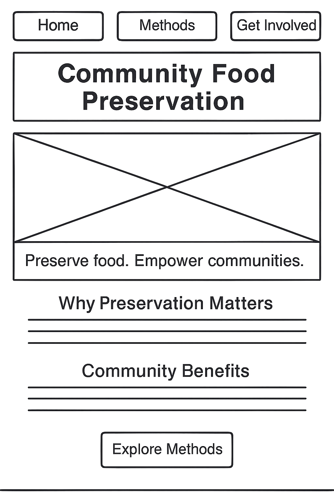

Overview
Purpose
This website promotes sustainable food preservation practices within local communities. It serves as an educational resource and event guide, providing practical information on microbiological principles, preservation techniques, and their impact on nutrition and sustainability.
Audience
Designed for community organizers, educators, students, and families who want to learn and share preservation skills. The site is accessible on both desktop and mobile devices, with simple navigation and clear visuals to support hands-on learning.
Branding
Website Logo

Style Guide
Color Palette
Palette URL: Color Palette on Coolors.co
| Primary | Secondary | Accent 1 | Accent 2 | Accent 3 | Accent 4 |
|---|---|---|---|---|---|
| #396E94 | #E7C24F | #A43312 | #FFFFFF | #381D2A | #AABD8C |
Typography
Heading Font: DM Serif Display
Paragraph Font: Lora
Example of Heading Font: DM Serif Display
Example of Paragraph Font: Lora
Normal Paragraph Example
Preserving food reduces waste, improves nutrition, and builds community resilience. This site will guide users through safe, simple techniques they can apply at home.
Colored Paragraph Example
Join us in empowering communities through food preservation. Learn, share, and grow together at our upcoming workshop.
Navigation
Site Map
Content
Home Page
Title: Community Food Preservation Initiative
Tagline: “Preserve food. Empower communities.”
Sections:
- Why preservation matters (nutrition, waste reduction)
- Community benefits (resilience, skill-sharing)
- Call to Action: “Explore Methods” button
Images for the Home Page:


Methods Page
Title: Preservation Methods
Sections:
- Fermentation: Benefits, examples (e.g., sauerkraut), image
- Drying: Sun drying, dehydrators, storage tips
- Canning: Equipment, safety, shelf life
- Tips Section: “Top 5 Safety Guidelines”
Images for the Methods Page:


Get Involved Page
Title: Get Involved
Sections:
- Volunteer opportunities for preservation workshops
- Community event calendar
- Sign-up form for newsletter or event participation
- Contact information and social media links
Images for the Get Involved Page:


Wireframes
Home
Methods

Get Involved